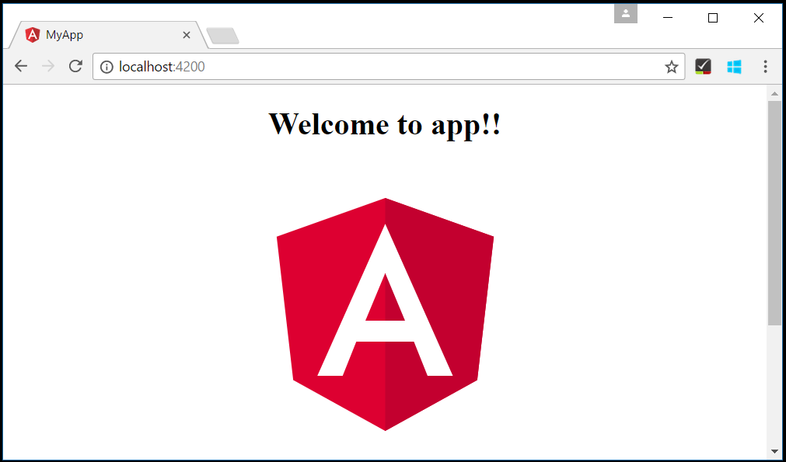
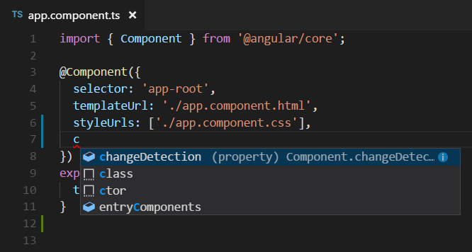
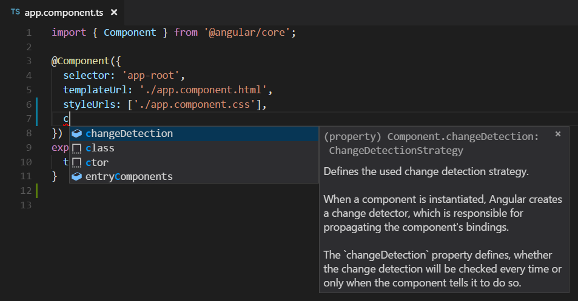
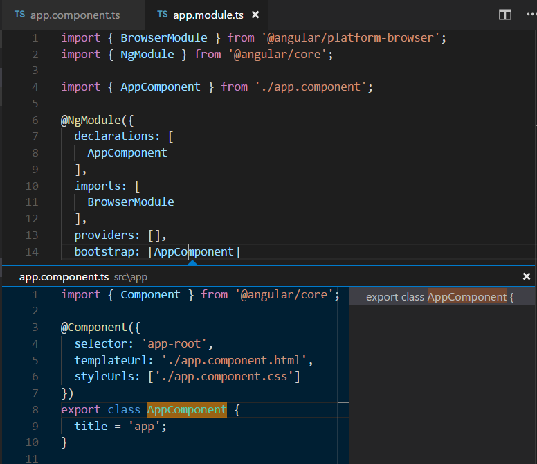
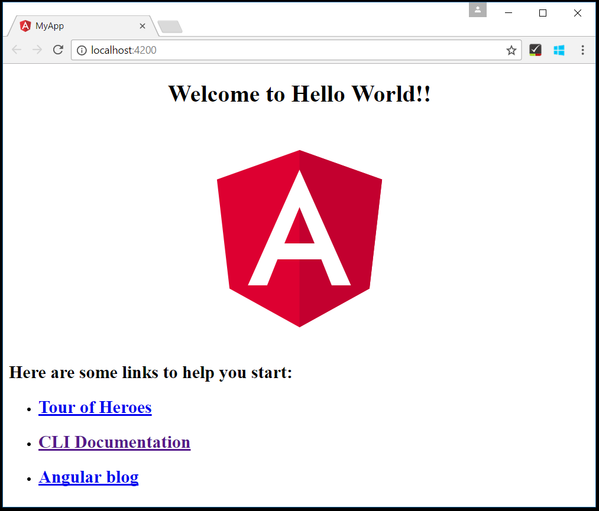
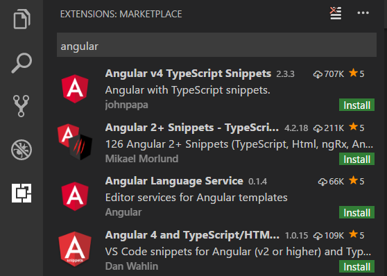

Using Angular in Visual Studio Code
Angular is a popular JavaScript library developed by Google for building web application user interfaces. The Visual Studio Code editor supports Angular IntelliSense and code navigation out of the box.

Welcome to Angular
We'll be using the Angular CLI for this tutorial. To install and use the command line interface as well as run the Angular application server, you'll need the Node.js JavaScript runtime and npm (the Node.js package manager) installed. npm is included with Node.js which you can install from Node.js downloads.
Tip: To test that you have Node.js and npm correctly installed on your machine, you can type
node --versionandnpm --version.
To install the Angular CLI, in a terminal or command prompt type:
npm install -g @angular/cli
This may take a few minutes to install. You can now create a new Angular application by typing:
ng new my-app
my-app is the name of the folder for your application. This may take a few minutes to create the Angular application in TypeScript and install its dependencies.
Let's quickly run our Angular application by navigating to the new folder and typing ng serve to start the web server and open the application in a browser:
cd my-app
ng serve
You should see "Welcome to app!!" on http://localhost:4200 in your browser. We'll leave the web server running while we look at the application with VS Code.
To open your Angular application in VS Code, open another terminal (or command prompt) and navigate to the my-app folder and type code .:
cd my-app
code .
Syntax highlighting and bracket matching
Now expand the src\app folder and select the app.component.ts file. You'll notice that VS Code has syntax highlighting for the various source code elements and, if you put the cursor on a parenthesis, the matching bracket is also selected.

IntelliSense
As you hover your mouse over text in the file, you'll see that VS Code gives you information about key items in your source code. Items such as variables, classes and Angular decorators are a few examples where you'll be presented with this information.

As you start typing in app.component.ts, you'll see smart suggestions and code snippets.

You can click the information button (i) to see a flyout with more documentation.

VS Code uses the TypeScript language service for code intelligence (IntelliSense) and it has a feature called Automatic Type Acquisition (ATA). ATA pulls down the npm Type Declaration files (*.d.ts) for the npm modules referenced in the package.json.
Go to Definition, Peek definition
Through the TypeScript language service, VS Code can also provide type definition information in the editor through Go to Definition (kb(editor.action.revealDefinition)) or Peek Definition (kb(editor.action.peekDefinition)). Open the app.module.ts file and put the cursor over AppComponent in the bootstrap property declaration, right click and select Peek Definition. A Peek window will open showing the AppComponent definition from app.component.ts.

Press kbstyle(Escape) to close the Peek window.
Hello World!
Let's update the sample application to "Hello World". Go back to the app.component.ts file and change the title string in AppComponent to "Hello World".
import { Component } from '@angular/core';
@Component({
selector: 'app-root',
templateUrl: './app.component.html',
styleUrls: ['./app.component.css']
})
export class AppComponent {
title = 'Hello World';
}
Once you save the app.component.ts file, the running instance of the server will update the web page and you'll see "Welcome to Hello World!!".
Tip: VS Code supports Auto Save, which by default saves your files after a delay. Check the Auto Save option in the File menu to turn on Auto Save or directly configure the
files.autoSaveuser setting.

Debugging Angular
To debug the client side Angular code, we'll use the built-in JavaScript debugger.
Note: This tutorial assumes you have the Edge browser installed. If you want to debug using Chrome, replace the launch
typewithpwa-chrome. There is also a debugger for the Firefox browser.
Set a breakpoint
To set a breakpoint in app.component.ts, click on the gutter to the left of the line numbers. This will set a breakpoint which will be visible as a red circle.

Configure the debugger
We need to initially configure the debugger. To do so, go to the Run view (kb(workbench.view.debug)) and click on the gear button or Create a launch.json link to create a launch.json debugger configuration file. Choose Edge: launch from the Select Environment dropdown list. This will create a launch.json file in a new .vscode folder in your project which includes a configuration to launch the website.
We need to make one change for our example: change the port of the url from 8080 to 4200. Your launch.json should look like this:
{
"version": "0.2.0",
"configurations": [
{
"type": "pwa-msedge",
"request": "launch",
"name": "Launch Edge against localhost",
"url": "http://localhost:4200",
"webRoot": "${workspaceFolder}"
}
]
}
Press kb(workbench.action.debug.start) or the green arrow to launch the debugger and open a new browser instance. The source code where the breakpoint is set runs on startup before the debugger was attached so we won't hit the breakpoint until we refresh the web page. Refresh the page and you should hit your breakpoint.

You can step through your source code (kb(workbench.action.debug.stepOver)), inspect variables such as AppComponent, and see the call stack of the client side Angular application.

For more information about the debugger and its available options, check out our documentation on browser debugging.
Popular Starter Kits
In this tutorial, we used the Angular CLI to create a simple Angular application. There are lots of great samples and starter kits available to help build your first Angular application.
Recipes
The VS Code team has created recipes for more complex debugging scenarios. There you'll find the Debugging with Angular CLI recipe which also uses the Angular CLI and goes into detail on debugging the generated project's unit tests.
MEAN Starter
If you'd like to see a full MEAN (MongoDB, Express, Angular, Node.js) stack example, look at MEAN.JS. They have documentation and an application generator for a sample MEAN project. You'll need to install and start MongoDB, but you'll quickly have a MEAN application running. VS Code also has great MongoDB support through the Azure Databases extension.
React
React is another popular web framework. If you'd like to see an example of React working with VS Code, check out the Using React in VS Code tutorial. It will walk you through creating an React application and configuring the launch.json file for the JavaScript debugger.
Angular Extensions
In addition to the functionality, VS Code provides out of the box, you can install VS Code extensions for greater functionality.
Click on an extension tile above to read the description and reviews on the Marketplace.
To find other Angular extensions, open the Extensions view (kb(workbench.view.extensions)) and type 'angular' to see a filtered list of Angular extensions.

The community has also created "Extension Packs" which bundle useful extensions together (for example, a linter, debugger, and snippets) into a single download. To see available Angular extension packs, add the "extension packs" category to your filter (angular @category:"extension packs").